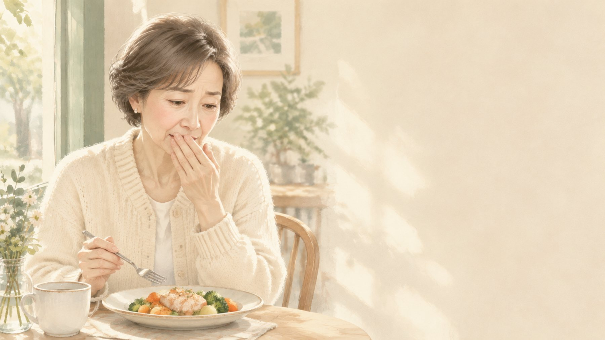
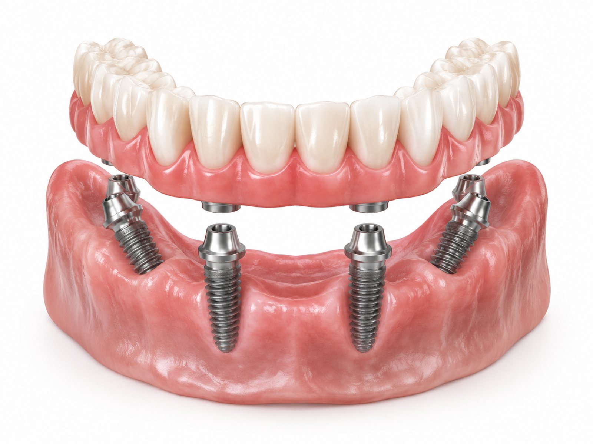
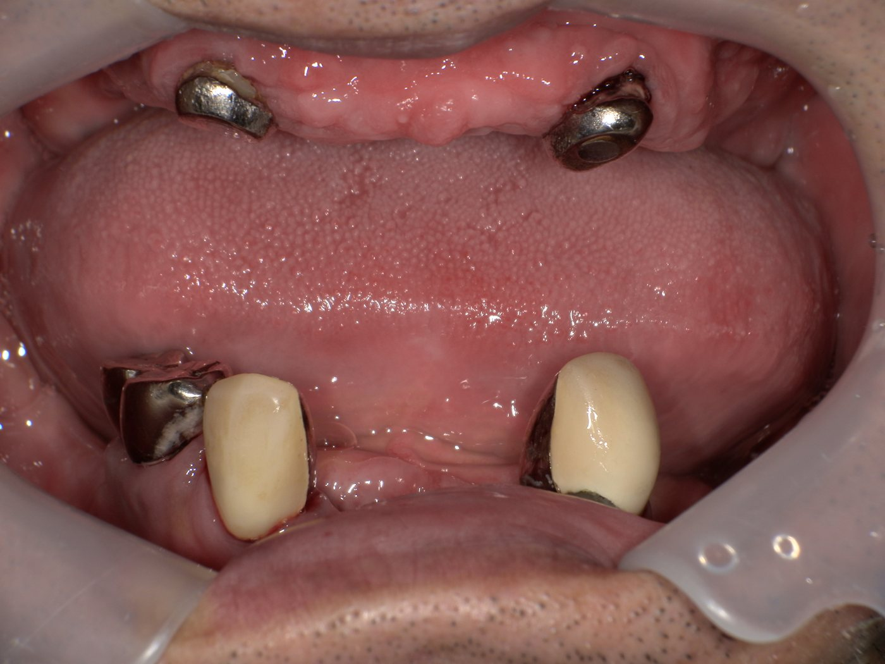
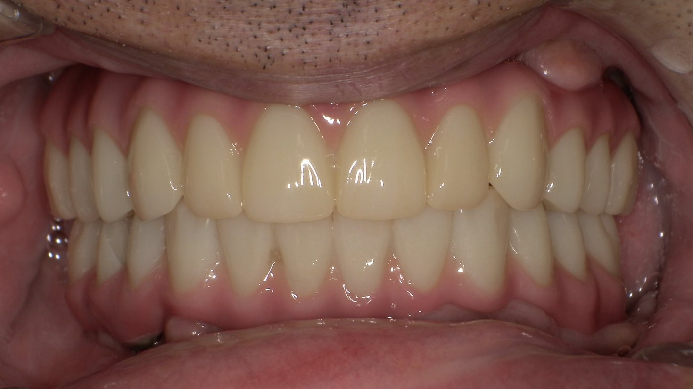
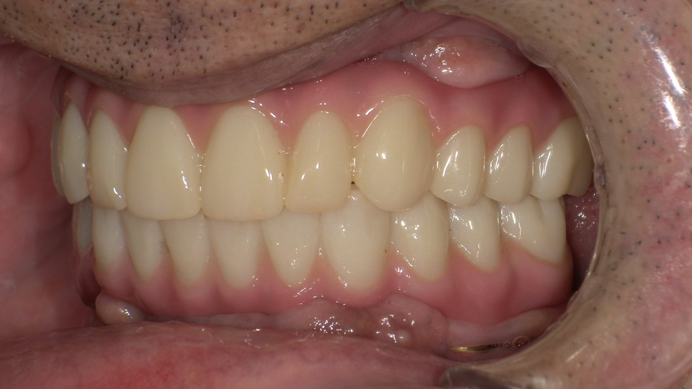
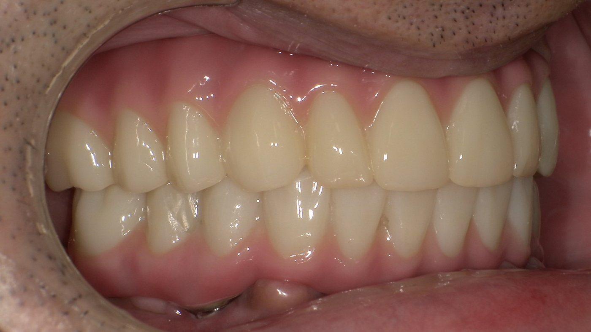
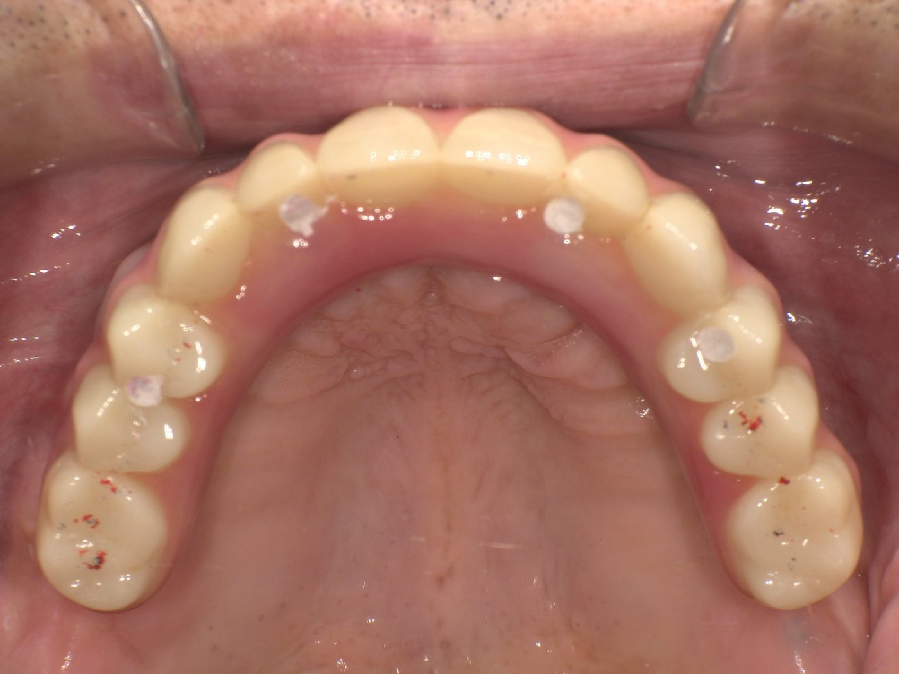
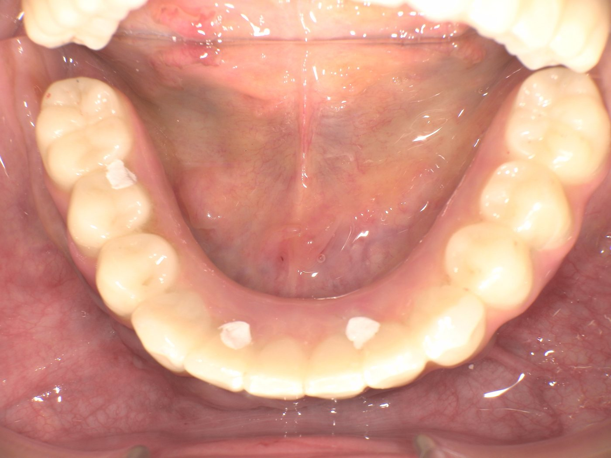
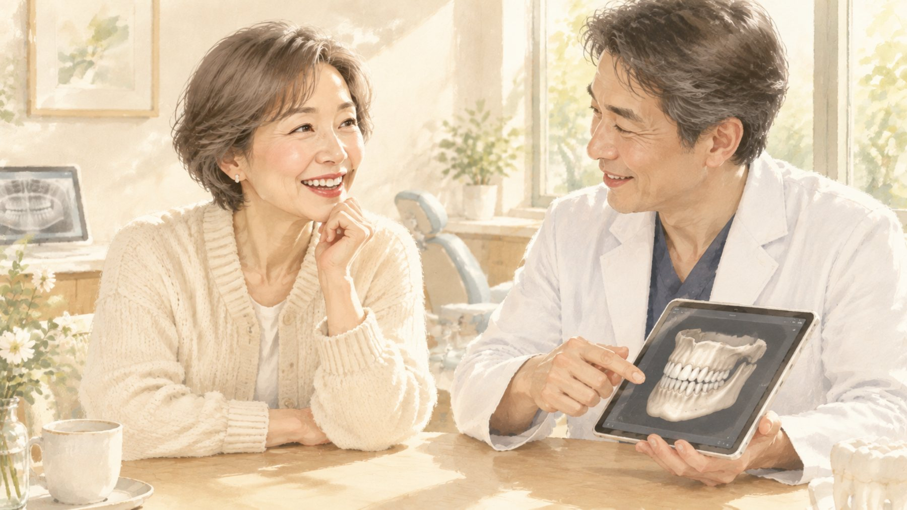
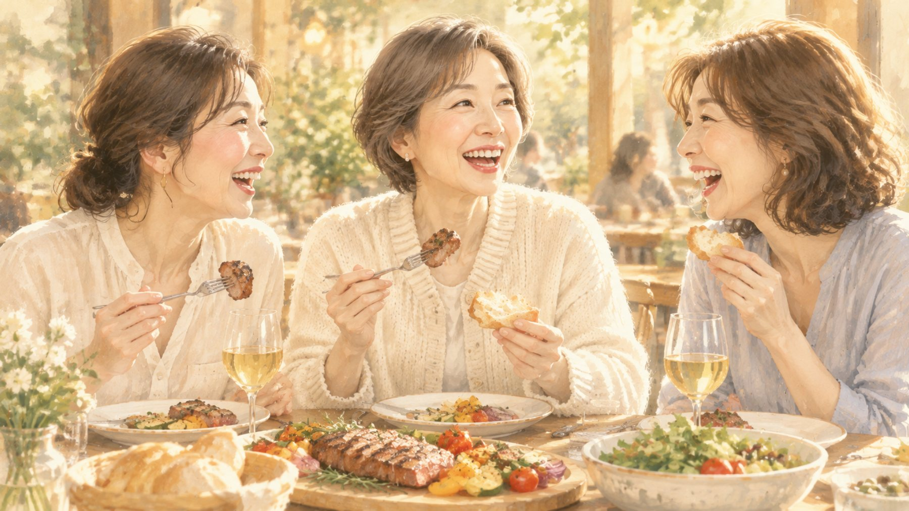

歯が少なくなった方のための、固定式の歯の治療
「DIOナビ フルアーチ」のご案内
医療法人社団KDS 大崎オーバルコート歯科・矯正歯科室
SCROLL ↓

YOUR CONCERNS
歯が少なくなっていても、
「取り外さない歯」で、しっかり噛める毎日を
取り戻せる方法があります。
WHAT IS FULL ARCH
少ない本数のインプラントで、片あご全部の歯をまとめて支える治療です。

しくみのイメージ（実際の本数・形はお口の状態により異なります）
OUR CASE
上下とも歯がほとんど残っておらず、「ぐらついて、ほとんど噛めない」「入れ歯は入れたくない」とご相談にいらした方の治療例です。


真ん中の丸を左右に動かすと、治療前と治療後を見比べられます




手術の当日から固定式の仮歯でお食事ができたことを、とても喜んでくださいました。いまは、食べにくかったものも問題なく召し上がっています。
診断：重度の歯周病で、上下とも残っている歯はごくわずか。根だけが残った歯や大きくぐらつく歯で、残すことは難しい状態でした。上の前歯の歯ぐきは柔らかく動きやすく、総入れ歯では安定しにくい状態でした。
治療：総入れ歯・骨を増やして多くのインプラントを入れる方法・フルアーチの3つをご説明し、「固定式にしたい」「大がかりな骨の手術は避けたい」とのご希望からフルアーチを選ばれました。抜歯と同じ日に上下それぞれ4本のインプラントを入れ、その日のうちに固定式の仮歯を装着。月1回の通院で噛み合わせや話しやすさを調整し、最終的な歯（12歯分の固定式ブリッジ）を装着しました。
現在：3〜4か月ごとのメインテナンスで、インプラントのまわりのお掃除と噛み合わせの確認を続けています。
※治療結果には個人差があります。リスク・副作用はページ後半の「治療のリスクについて」をご覧ください。
※この治療例は当院ホームページの症例紹介にも掲載しています。
WHY DIOnavi.
DIOナビ フルアーチは、インプラントメーカーDIO（ディオ）社のデジタル治療システムです。検査から手術、仮歯、最終の歯まで、すべてをデジタルのデータでつないで進めます。

ANSHIN 01
CTと口の中のスキャンのデータから、インプラントを入れる位置・角度・深さを、手術の前に決めておきます。手術では、その計画どおりに作った専用の「ガイド（型）」を使います。
歯ぐきの切開を小さくできる場合もANSHIN 02
設計のデータから、仮歯を手術の前に作っておきます。だから、手術のその日のうちに固定式の仮歯を入れて帰ることができます。「歯がない期間」をつくりません。
お仕事やお出かけも、いつもどおりにANSHIN 03
仮歯で数か月、噛み心地・見た目・話しやすさを実際に確かめ、そのデータをもとに最終の歯を作ります。当院では仮歯の期間中の調整回数に制限を設けていません。
納得いくまで調整できます※骨の状態などにより、当日に固定式の仮歯を入れられない場合や、切開が必要な場合があります。精密検査の結果をもとにご説明します。
※最終の歯はねじ止め式のため、お手入れや修理がしやすく、設計データが保存されるので作り直しが必要になったときも元の設計から作れます。
COMPARISON
| 総入れ歯 | 1本ずつ インプラント | フルアーチ |
|---|---|---|
| しくみ | ||
| 歯ぐきの上に乗せる取り外し式 | 歯の本数に近い数のインプラントを植える | 4〜6本のインプラントで、ひとつながりの歯を固定 |
| 噛みごたえ | ||
| 硬いものは苦手になりやすい | しっかり噛める | しっかり噛める |
| 付け心地 | ||
| ずれる・外れる不安があり、上あごを覆う部分がある | 自分の歯に近い | 固定式でずれない。上あごを覆わない |
| 手術 | ||
| なし | 本数が多く、骨を増やす手術が必要になることも | 本数が少なく、骨を増やす手術を避けられることが多い |
| 治療中の歯 | ||
| — | 仮の入れ歯で過ごす期間があることも | 手術当日に固定式の仮歯 |
| 費用 | ||
| 保険〜自費 | 本数に応じて高額になりやすい | 片あご 240万円（税別） |
※一般的な特徴です。どの方法が合うかは、お口の状態とご希望によって変わります。
FLOW
※当院の治療例でのめやすです。お口の状態により異なります。
FOR YOUR COMFORT
PRICE
DIOナビ フルアーチ（片あご）2,400,000円（税別）
上下両方の場合は 4,800,000円（税別）／仮歯の調整は回数無制限で費用に含まれます
※費用の考え方の一例です。使用できる年数を約束するものではありません。
WARRANTY
最終の歯を装着した日から10年間の保証があります。普通に生活していて破損したり外れたりしたときは、下の割合で保証します。
※保証には、年2回以上の定期健診とお口のクリーニングを受けていただくことが条件です。けが・無理な使い方による破損などは対象外です。くわしくは保証書でご説明します。

好きなものを、好きな人と、気がねなく。
噛めるようになると、食事の時間も、人と会う時間も、もっと楽しみになります。
Q&A
手術は麻酔をしっかり効かせてから行います。不安が強い方には、眠っているような状態で受けられる静脈内鎮静法もご用意しています。手術のあとは腫れや痛みが出ることがあるため、痛み止めのお薬をお出しします。
DIOナビ フルアーチでは、手術の前に仮歯を作っておき、手術当日に固定式の仮歯を装着するのが基本です。骨の状態によっては当日の装着ができない場合もあり、その場合は事前にご説明します。
年齢よりも、骨の量や全身の健康状態のほうが大切です。CT検査と問診で、安全に治療できるかを確かめてからご提案します。
ご自分で取り外す必要はありません。歯ブラシに加えて、歯と歯ぐきのすき間を清掃する専用のブラシなどを使います。使い方は衛生士が丁寧にお伝えします。そのうえで、3〜4か月ごとのメインテナンスで、ご自宅では届きにくいところをお掃除します。
期間をお約束することはできませんが、毎日のお手入れと定期的なメインテナンスが、長持ちのいちばんの鍵です。最終の歯の装着から10年間の保証制度もあります。
残せる歯があるかどうかは、精密検査で一本ずつ確認してから決めます。今のお口の状態と、治療の選択肢をご説明したうえで、いっしょに決めていきます。
RISK
MESSAGE
歯が少なくなると、食事も、会話も、笑うことも、知らないうちに我慢が増えていきます。そして「もう歳だから」「いまさら大がかりな治療は」と、あきらめてしまう方を、私はたくさん見てきました。
けれども今は、デジタルの技術によって、手術の負担を抑えながら、手術のその日に固定式の歯を入れられる時代になりました。歯が少なくなっていても、しっかり噛める毎日を取り戻すことは、決して遠い話ではありません。
大切なのは、いきなり決めることではなく、まず今のお口の状態を正しく知ることです。どんな選択肢があるのか、いっしょに確かめるところから始めませんか。
医療法人社団KDS 理事長
大崎オーバルコート歯科・矯正歯科室小林 伸
NEXT STEP
CTとスキャンで今のお口の状態を確かめ、
あなたに合った方法と費用を、具体的にご説明します。
ご不明な点は、どんなことでもお気軽にどうぞ。
大崎オーバルコート歯科・矯正歯科室
東京都品川区東五反田2-16-1 ザ・パークタワー1F
JR「大崎」駅より徒歩4分／JR「五反田」駅より徒歩10分